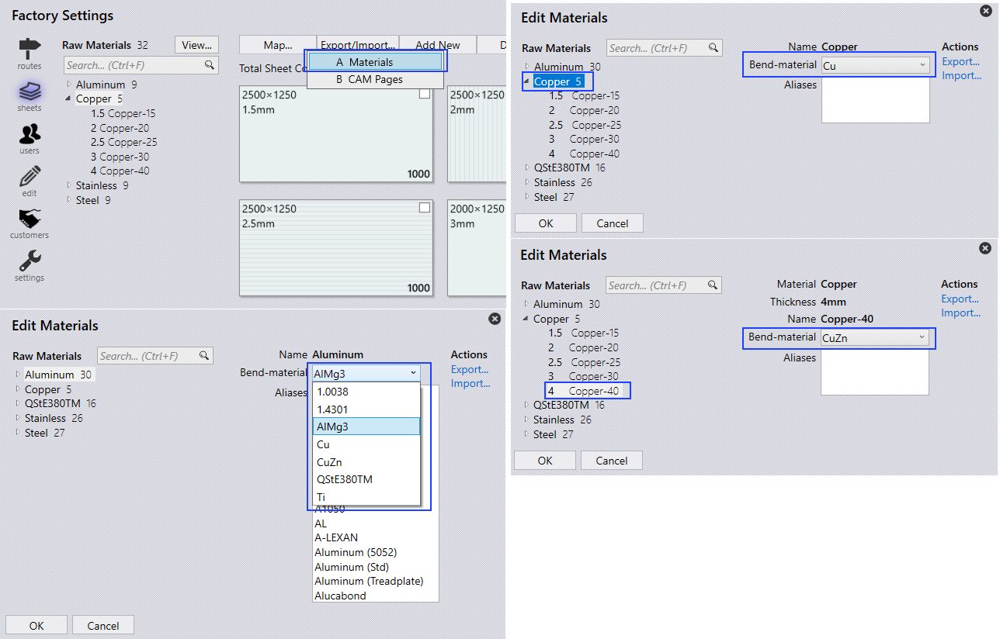

Αντιστοίχιση υλικού
Εναλλακτικά, θα μπορούσατε να αντιστοιχίσετε απευθείας το υλικό από το TecZone. Τα Ψευδώνυμα μπορούν να χρησιμοποιηθούν για να χρησιμοποιήσετε τα ονόματα υλικών που χρησιμοποιούνται συνήθως στο εργοστάσιό σας.
Προσθήκη Bend Material από το TecZone
-
Ανοίξτε το TecZone. Κάντε κλικ στο Database και Materials.
-
Προσθέστε υλικό και τις παραμέτρους του. Κλείστε το TecZone.
-
Κάντε δεξί κλικ στο Pmonitor στη γραμμή συστήματος, κάντε κλικ στο Θέλετε να μετακινήσετε τη διαμόρφωση Flux στη βιβλιοθήκη;.
-
Κάντε κλικ στο Ναι για να επιβεβαιώσετε την ώθηση της διαμόρφωσης TecZone στο Repository.

Αντιστοίχιση Ονόματος Υλικού
εργοστασιακές → μεταλλικές πλάκες → Χαρτογράφηση → Υλικά, εμφανίζεται η σελίδα Επεξεργασία υλικών. Τα Υλικά και τα Πρώτες ύλες απαριθμούνται στα αριστερά για αντιστοίχιση με το Bend Material (1.0036, 1.4301, AlMg3,…) και/ή για αναφορά των Ψευδώνυμα.
-
Κάντε κλικ στο υλικό Copper και επιλέξτε Cu. Το υλικό εκχωρείται σε όλα τα Raw Material Copper (Copper-15, Copper-20, Copper-25, Copper-30, Copper-40).
-
Κάντε κλικ στο Raw Material Copper-40 και επιλέξτε CuZn.
Η αντιστοίχιση Bend Material με Material ή Raw Material μπορεί να γίνει.
